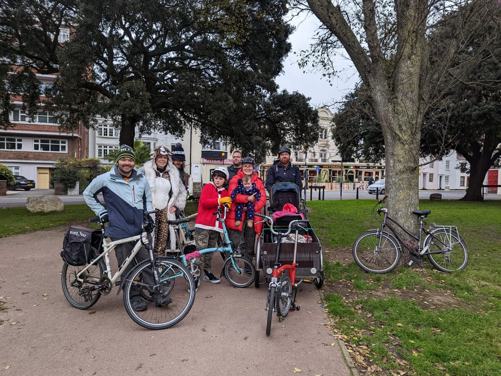
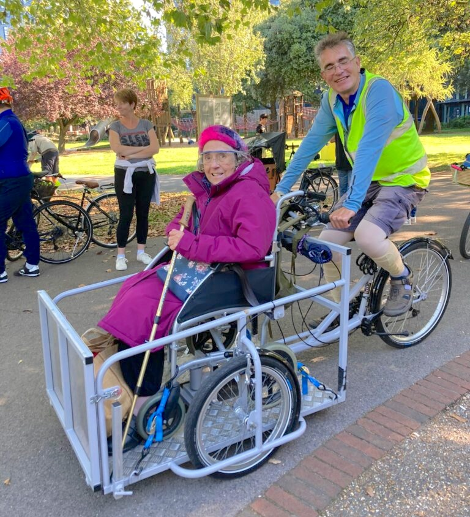
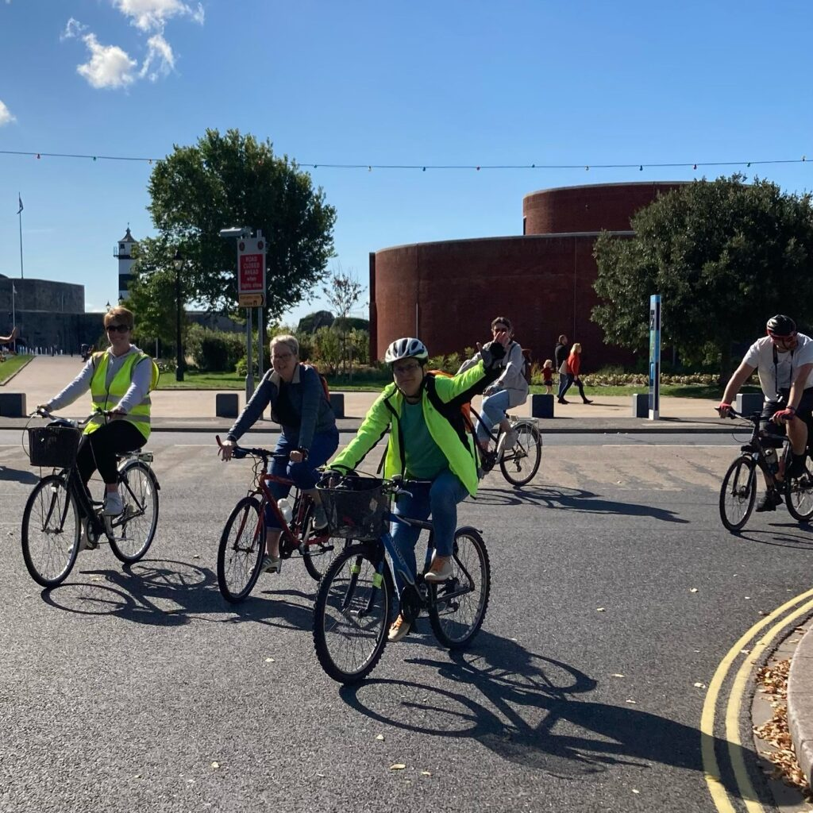

Portsmouth joins a growing global movement of Kidical Mass cycle rides in a call for safe cycling infrastructure which a 4-year-old and a 94-year-old could use for daily transport. Around 40 children and adults joined the first ride in September 2022 during international Kidical Mass weekend which saw over 200 cities in 15 countries taking part, including cities in UK: Bath, Bristol, Barry, Exeter, Bournemouth, London, Norwich, Derby, Birmingham, Leamington Spa Warwickshire, York, Newcastle, North Tyneside, Edinburgh, Dundee and Inverness. A second Christmas themed ride in December 2022 attracted around 45 participants despite chilly conditions on the day. With the youngest person being just a few months old and traveling in a cargo bike.

Kidical Mass rides are designed to be inclusive for all ages and abilities. The rides are fun, safe environments for families and friends to cycle together however, they also carry an important
message and a call for safe, segregated routes that enable children and everyone else to walk, scoot, wheel and cycle in their neighbourhoods. This is something our city desperately needs as currently, many residents, including families and children do not feel safe cycling on our roads, so they opt for driving short distances feeling that they have no other choice. Portsmouth’s Kidical Mass aims to highlight that people of all ages and abilities want to cycle in the city and need safe spaces to do so.

Claire Coulter, Kidical Mass participant said: "I cycle everywhere, it is my primary mode of transport. And although there are bike lanes they are often single dotted lanes that people park in, half on the pavement or entirely blocking the cycle lane. So I can’t win, I cannot cycle with my children on the pavement because there is no space for them there and I cannot cycle on the road as I am pulling into traffic with my kids. It feels really unsafe."

Adam aged 7, who took part in Kidical Mass said:
"I would like to cycle to school and everywhere I want in our city. It is good for me; I get exercise
when I pedal. It is fun. But I am scared. There are just too many cars."

Find out about the next Kidical Mass ride in Portsmouth by following them on Facebook
Contact us if you would like to support Kidical Mass ride and help organising one.
Make space! Don’t limit children – limit traffic.